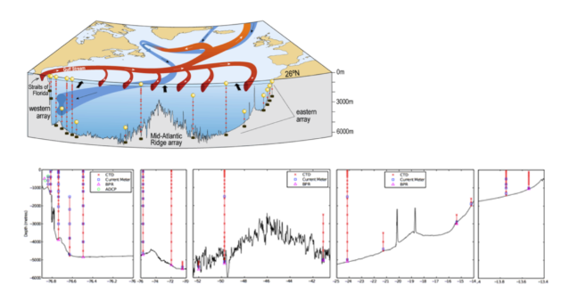
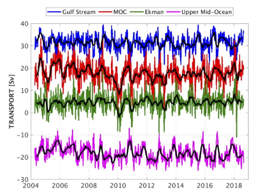

| |||||||||||||
|
2. GSR Greenland Scotland Ridge 3. OSNAP Overturning in the Subpolar North Atlantic Program 4. NOAC North Atlantic Changes 6. MOVE Meridional Overturning Variability Experiment 8. SAMBA-SAMOC South Atlantic Meridional Overturning Circulation
|
RAPID-MOCHA-WBTSRapid Climate Change
Brief description of the TMAThe RAPID-MOCHA-WBTS TMA is composed of instruments from three projects: RAPID-MOC (www.rapid.ac.uk/rapidmoc/), MOCHA (www.rsmas.miami.edu/users/mocha/), and Western Boundary Time Series (WBTS). The TMA is has been running since 2004 (with the Florida Current component extending back to 1982), and is designed to capture the full AMOC at about 26.5°N. The TMA utilizes a number of technologies, including submarine cable (for the Florida Current), current meter moorings, dynamic height moorings, and pressure-equipped inverted echo sounders. From these combined data, volume and heat transport time series and the overturning stream function are being derived. Biogeochemical measurements were added to selected moorings in 2015 and include oxygen, dissolved inorganic carbon, pH and include remote samplers. This TMA was the first full-depth, basin-wide, continuous monitoring system for the AMOC, heat and freshwater transport, and the record it is collecting is the longest available from any complete trans-basin TMA. The array provides high temporal resolution (twice daily estimates incorporating hourly sampling from individual instruments), and the best accuracy of existing MOC observation systems.

Figure 1: (a) Schematic of the circulation at and north of 26.5°N, with the mooring locations superimposed; (b) Vertical section of the interior basin (east of the Bahamas Islands) with vertical lines illustrating moorings with individual instruments at the appropriate depths. Data products: volume transport time seriesFigure 2: Ten-day (colours) and three month (black) low-pass filtered timeseries of Florida Straits transport (blue), Ekman transport (green), upper mid-ocean transport (magenta), and overturning transport (red) for the period 2nd April 2004 to 3rd September 2018. Florida Straits transport is based on electromagnetic cable measurements; Ekman transport is based on ERA winds. The upper mid-ocean transport, based on the RAPID mooring data, is the vertical integral of the transport per unit depth down to the deepest northward velocity (~1100 m) on each day. Overturning transport is then the sum of the Florida Straits, Ekman, and upper mid-ocean transports and represents the maximum northward transport of upper-layer waters on each day. Positive transports correspond to northward flow. Transport data in NetCDF can be downloaded heredoi:10.5285/8cd7e7bb-9a20-05d8-e053-6c86abc012c2
Publications | ||||||||||||